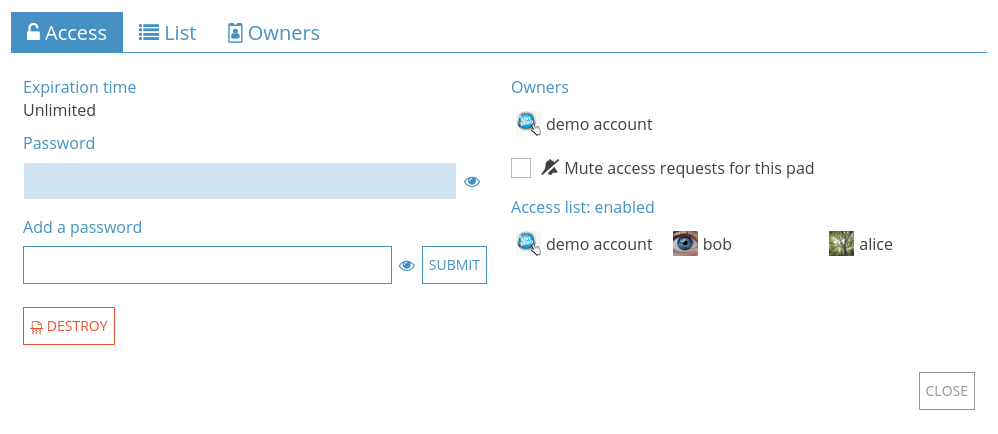
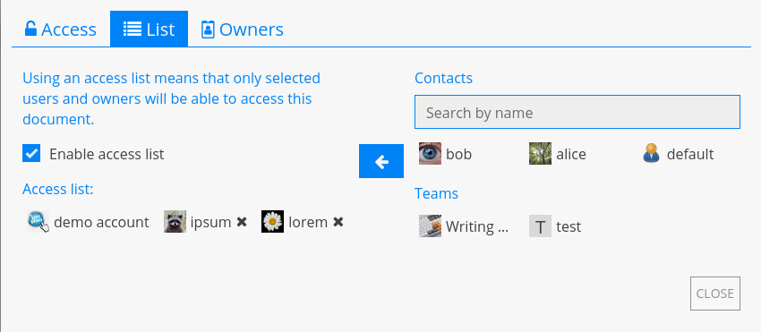
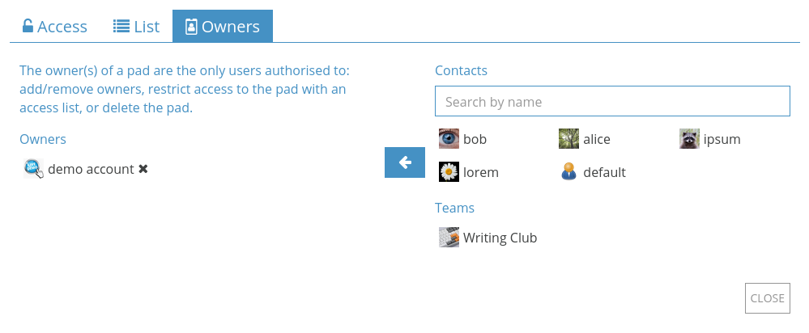

Share / Access¶
Share and Access are the two menus to manage how other users can interact with your documents on CryptPad.
From the document toolbar: Share and Access at the center.
From the CryptDrive:
Right clickon a document > Share or Access.
Share¶
There are three ways to share a document: Sharing with contacts, Sharing a link, and Embedding. In each case, access rights can be set to authorise the recipient to edit the document, or to only view it.
Access rights¶
There are 4 levels of permissions:
View: Read-only without editing the document.
Present: Read-only the rendered output of the document, available in the Code / Markdown and Slides applications.
Edit: View and make changes to the document.
View once and self-destruct: Read-only one time. Once the link is opened by a recipient, the document is deleted permanently.
Note
If a document is already stored in the CryptDrive of a user with edit rights, the “edit link” is shown in the document’s properties even if the user is in View mode.
Sharing with contacts¶
Logged in users
This is the recommended method for sharing documents securely on CryptPad. When sharing directly with contacts, document links never leave the encrypted platform of CryptPad. This prevents data from being leaked to third parties.

To share with one or more contacts:
Share in the document toolbar > Contacts.
Right clickon the document in the CryptDrive > Share > Contacts.
Then:
Choose the access rights.
Select the contacts or teams to share with.
Share button.
Note
When sharing with contacts, they receive a notification. When sharing with a team, the document is added directly to the team’s CryptDrive.
Sharing a link¶
The Link tab provides links that can be shared through the medium of your choice. Depending on how you send the link, this method can present security risks. To add a level of security, it is recommended to add a password to your document before sharing the link.

To copy the link to a document:
From the document: Share in the toolbar > Link.
From the CryptDrive :
Right clickon the document > Share > Link.
Then:
Choose the access rights and additional options:
Embed mode hides the toolbar and user list.
Preview allows to check what the link will look like before sending it.
Copy the link.
Send the link.
Embedding¶
Embedding allows for a CryptPad document to be displayed on a web page.

To embed a document:
From the document : Share in the toolbar > Embed.
From the CryptDrive :
Right clickon the document > Share > Embed.
then
Choose the access rights.
Copy the embed code.
Paste the code on a web page.
Access¶
Logged in users
This menu is used to restrict access to a document or shared folder:
From the document: Access.
From the CryptDrive:
Right clickon the document or shared folder > Access.
Access tab¶
This tab summarises all the modalities of access to the document:
Expiration date: Date at which the document will be deleted. This date is set at the creation of the document and cannot be modified afterwards.
Password: Displays if a password has been set. A new password can be set, or an existing password modified.
Owners: List of all the document’s owners.
- Edit rights requests:Request edit rights: For users with read-only access rights.Mute access requests for this pad: Hides edit rights requests for this document. Document owners
Access list: Displays the access list and indicates if it is enabled.
Destroy: Delete the document permanently.
Access List¶
Document owners
The access list restricts access to a document. Once active, users who are not on the list are not able to access the document, even if they have it stored in their CryptDrive.
To enable the access list, tick Enable access list. The owners of the document are on the list by default and cannot be removed from it.
To add contacts or teams to the list:
Select them in the list of contacts on the right.
Add them to the list with the button.
To remove a user or team from the list use the button next to their name.
Owners¶
This tab is used to manage the ownership of the document. Owners of a document have the following permissions:
Enable an access list.
Enable a password.
Add or remove other owners.
Destroy the document.
The ownership of a document is set when creating it.
Note
If a document is created without owners, no one has permissions to manage its ownership. It cannot be permanently destroyed by anyone, but can be removed from the CryptDrive and will be destroyed automatically after 90 days of inactivity.
Document owners
To add users or teams as owners:
Select them in the list of contacts on the right.
Add them to the list with the button.
To remove an owner, use the button next to their name.